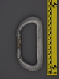
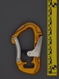
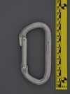
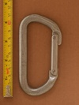
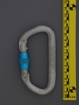

| Image | Summary | ||||
|---|---|---|---|---|---|
|  | Salewa (alloy) | D | n/a | n/a | solid symmetric D from the late 1960s |
|  | Salewa (unknown) | other | full-auto | press | unique compound locking piece design |
|  | Salewa Hollow Karabiner (angled nose) | asymmetric D | n/a | n/a | hollow - constructed from tubing not solid aluminum rod |
 | Salewa Hollow Karabiner (black/gold) | D | n/a | n/a | hollow - constructed from tubing not solid aluminum rod |
|  | Salewa Hollow Karabiner (short hinge) | D | n/a | n/a | hollow - constructed from tubing not solid aluminum rod |
|  | Salewa Hollow Karabiner Screw Gate (blue anodized) | asymmetric D | manual | gate stopped - snap-ring | hollow - constructed from tubing not solid aluminum rod |
 | Salewa Hot | asymmetric D | n/a | n/a | 2000's workhorse carabiner from an old brand |